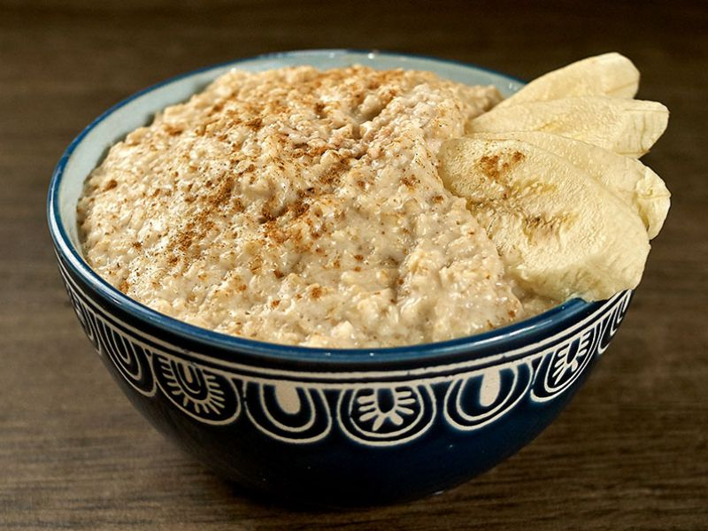

Oats

Description:
Simple and tasty breakfast. Serves 1. To be prepared in the microwave.
Ingredients:
- 3 tablespoons of oats
- Cinnamon powder
- Sugar
- Butter
- Fruit
- Salt
Method:
- Soak the oats in approximately 50ml of water and a pinch of salt for 3 minutes.
- Microwave the oats in an appropriate container for about 3 minutes.
- Stir the oats every 30 seconds or so to avoid oats spilling out of the container.
- Cut up some fruit of your choice.
- Add the fruit and a pinch of cinnamon to your oats.
- Add the butter to the oats and enjoy.
Home page